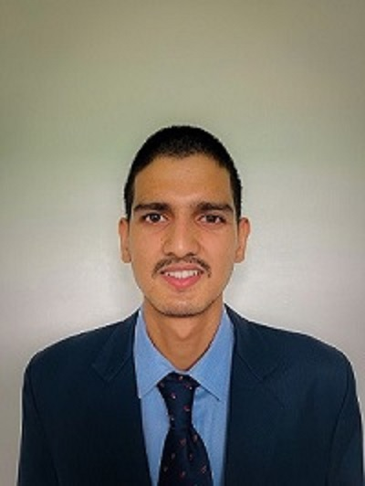

Software Developer
A passionate developer and avid explorer of the digital realm
Graphic Era Hill University, Dehradun 2022-2024
Univeraity of Petrolium and Energy Studies, Dehradun 2019-2022
Display a suitable avatar using your name. Library: Avatar by Dice Bear API.
Developed an AI-powered Tic Tac Toe game using algorithms. Implemented the game on a web-based platform, allowing players to compete against the computer program. Algorithm: MIN MAX.
Machine learning model based on supervised techniques and a comparative analysis between them. Model accuracy - 100%
Facilitated as a best volunteer at NSS UPES.
Cleared AFCAT I 2022. Appeared in 5 days AFSB Interview at 5AFSB, Guwahati – 2022.